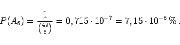

Inhalt Index DeskTop Bronstein

 Wahrscheinlichkeitsrechnung und Mathematische Statistik Wahrscheinlichkeitsrechnung Ereignisse, Häufigkeiten und Wahrscheinlichkeiten Häufigkeiten und Wahrscheinlichkeiten
Wahrscheinlichkeitsrechnung und Mathematische Statistik Wahrscheinlichkeitsrechnung Ereignisse, Häufigkeiten und Wahrscheinlichkeiten Häufigkeiten und Wahrscheinlichkeiten


| Beispiel A |
|
Für die Wahrscheinlichkeit , mit einem idealen Würfel eine 2 zu würfeln, gilt: . |
| Beispiel B |
|
Wie groß ist die Chance, beim Zahlenlotto ,,6 aus 49`` vier Richtige zu tippen? 
|
| Beispiel C |
|
Wie groß ist die Wahrscheinlichkeit P(A) dafür, daß unter k Personen 2 am gleichen Tag Geburtstag haben, wobei die Geburtsjahre nicht übereinstimmen müssen ? Man sieht, ab 23 Personen ist die Wahrscheinlichkeit, daß davon 2 am gleichen Tag Geburtstag haben, größer als . |